、
、 记钻石甲、乙的真实重量。第一次称重时，甲、乙在一起，称的是
记钻石甲、乙的真实重量。第一次称重时，甲、乙在一起，称的是 第 4 章 通过试验收集数据
4.1 试验需要设计
讲过了抽样调査，我们来讨论采集数据的另一种方式：做试验。相比起来，这种方式所涉及的问题更为复杂。在抽样调査中，我们的问题只是确定抽出的个体数——样本量，以及用怎样的方式（简单随机抽样、分层抽样、集团抽样等）去抽取这些样本。做试验则不然。在此，人有更大的主动性。例如做一个农业试验，使用怎样的播种量、施肥量等，人有很大的选择余地。这固然有很大的好处，但麻烦也就跟着产生。因为如果选择不当，轻则降低效率，事倍功半，浪费人力、物力、资源，重则将人引入歧途，无法得出结论，甚至导致失败。
例如，你手头有两颗钻石，要在一架天平上称出其各自的重量。一种办法是一次称一颗，若不计较天平的误差，称两次即得所要的结果。这当然是一个合理而可用的安排，但如考虑到天平有称量误差，则上述的安排不是最好的。最好的安排是下面这样的。第一次把两颗钻石一起称，得出结果
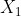
。第二次把钻石甲、乙分别放在天平的左、右盘，再以砝码平衡之，约定砝码在右盘时为正，在左盘时为负，将其结果记为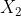
， 表示甲的重量减去乙的重量。图 4.1 是一个示意图，表示甲比乙重的情况。得到数据 、 后，分别以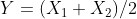
和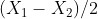
估计钻石甲、乙的重量。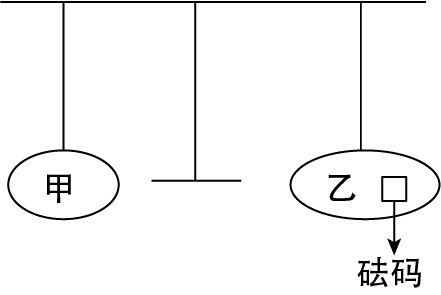
图 4.1 称钻石
为什么这种做法比一个一个称的安排好呢？从平常的眼光看这不好理解，反觉得有些自找麻烦，但从统计分析的角度可以解释，由于不太复杂，不妨仔细地谈一谈。
分别以 、 记钻石甲、乙的真实重量。第一次称重时，甲、乙在一起，称的是
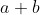
，结果为 。由于有误差， 并不恰好等于 ，而还要加上一个随机误差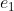
。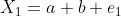
（a）第二次称，甲在左盘乙在右盘，称的是
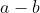
，结果为 。同样，由于有误差， 并不恰好等于 ，而还要加上一个误差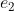
。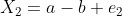
（b）把（a）（b）两式相加，得
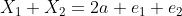
，即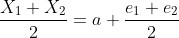
从此式看出，虽然用
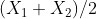
去估计 仍有误差，但误差 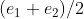
是两个误差的算术平均。在前几章中我们多次指出，平均的结果使误差方差下降而改善了精度。对 的估计有同样的结论。所以，在这个新的安排之下，我们并未增加称量次数（一共两次，与一个一个称且各称一次的次数相同），但改善了估计的精度。如果用逐个称的方法，要达到同样的（改善了的）精度，需要每一颗各称两次，一共 4 次。这样，通过上述聪明的安排，在不增加称量次数的条件下，把事情做得更好了。另一个极端是，每次都把甲、乙放在一起称。如果这样安排，不论你称多少次，都只能得出甲、乙重量之和的估计，而无法将其分开。我们的目的（称出每颗钻石之重）无法达成，因而这是一个不好的安排。
有读者也许会说：“这个问题可笑，谁也不会做这样愚蠢的安排。”确实，在这种简单问题的情况下是如此。但是，在一个复杂的问题中，由于考虑不周到而犯下这样的错误，就不仅可能，且有时为了避免这种错误还要大费周折。
举一个简单的例子。治疗某种疾病有现行的方法  。有人提出了一种认为可提高疗效的新方法
。有人提出了一种认为可提高疗效的新方法  。为进行验证，各取患者若干人做试验，结果表明 的治愈率高。但仔细一检查，发现用疗法 的患者多数年轻而病情轻，用疗法 的患者则反是。这样一来，试验结果的解释就不一定是 优于 ，而可能是由于其他原因——使用疗法 的患者素质较好。这实际上与上述称重量的问题无异：我们“称”出的不是疗效，而是“疗效 + 素质”。
。为进行验证，各取患者若干人做试验，结果表明 的治愈率高。但仔细一检查，发现用疗法 的患者多数年轻而病情轻，用疗法 的患者则反是。这样一来，试验结果的解释就不一定是 优于 ，而可能是由于其他原因——使用疗法 的患者素质较好。这实际上与上述称重量的问题无异：我们“称”出的不是疗效，而是“疗效 + 素质”。
把以上讲的小结一下，我们说，干扰一个试验结果的有：（1）混入的系统性因素；（2）随机性的误差。前者是指那种显著的、可以造成重大错误的因素，例如病人的情况不同可能对疗效的估计产生重大错误。又如要通过试验去验证，一种工业产品的新配方（或新工艺）是否真能改善产品的性能。但新旧两种配方的试验分在两个工厂做，而这两个厂的设备条件和工人素质都有差异，后者作为系统性因素混入试验结果，使我们无法得出可信的结论。避免这种情况的方法有二：一是设法消除，如在前一例中，可选择年龄和病情大致相当的患者去做临床试验；二是将其计入，但采取适当的试验安排，以使之能与我们关注的效应分离开。如在后一例中，可以把两种配方都在两个工厂中生产，使工厂条件上的差别在数据分析中互相抵消，而不与配方优良性的效应相混淆。
随机性因素的影响是不可能完全消除的，只能采取一些办法加以抑制，不使之过大以防造成试验结果在解释上的不确定性。例如要准备多份材料做同一个试验，虽然在准备材料时力求其均匀纯净，但总不可能绝对如一。这差异就作为误差进入试验结果，如果它过大，就可能造成下述情况。从试验结果上看甲、乙有一定差异（比如品种甲的亩产比乙高一些），但随机误差很显著，大到可以与这差异相比拟的程度，我们就无法确定：数据上显示出的甲乙差异究竟是因为二者真有差异，还是因为随机误差的干扰。
抑制随机误差的影响一般有 3 种方法。
一是工作认真细致。如准备试验材料时尽量做到均匀纯净，用天平称物时小心操作，避免外界环境和个人因素（注意力不集中等）的干扰。
二是重复。比如天平灵敏度不高，就多称几次求其平均，利用平均值误差下降的原理缩小误差的影响。
三是进行适当的安排。前面所举天平称钻石就是一个例子，在该例中，适当的安排在不增加称量次数的情况下，缩小了随机误差。
上面我们多次提到“安排”一词。这是指如何安排试验，使之达到消除系统误差和缩减随机误差的干扰。在统计学中，把这种安排试验的学问叫作“试验设计”，它是统计学的一个重要分支学科。从上面的讨论可以看出，设计（或安排）试验，并不涉及该试验相关的学科专业知识。化学试验如何做，生物试验如何做，这是化学家、生物学家的事，统计学家所做的，只是帮助他们从数学的角度设计一种有效的安排，它只涉及某些配置问题（或者说组合问题），而不去干预其具体操作。如在天平称钻石的试验中，统计学家建议那样一种称法（先两个一起称，再一边一个称），至于如何去调整、操作天平，那要由懂行的人去做，不在统计学家职责的范围内。